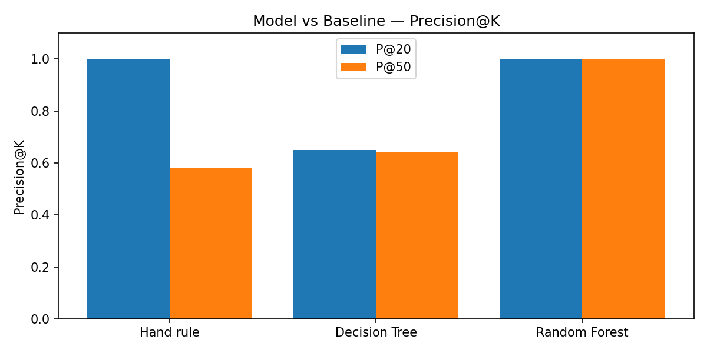
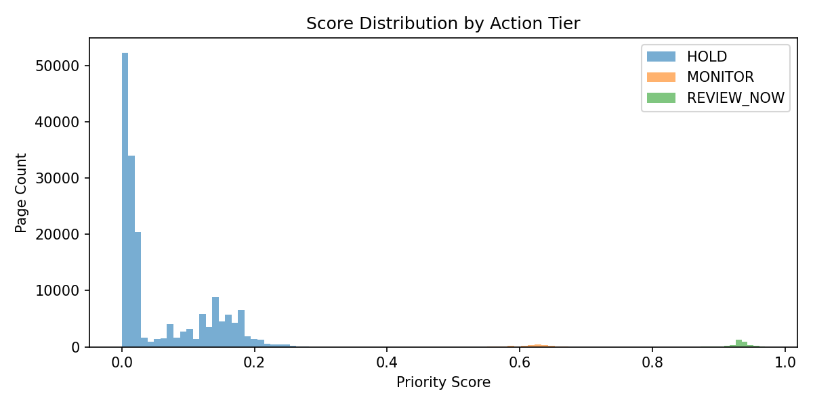
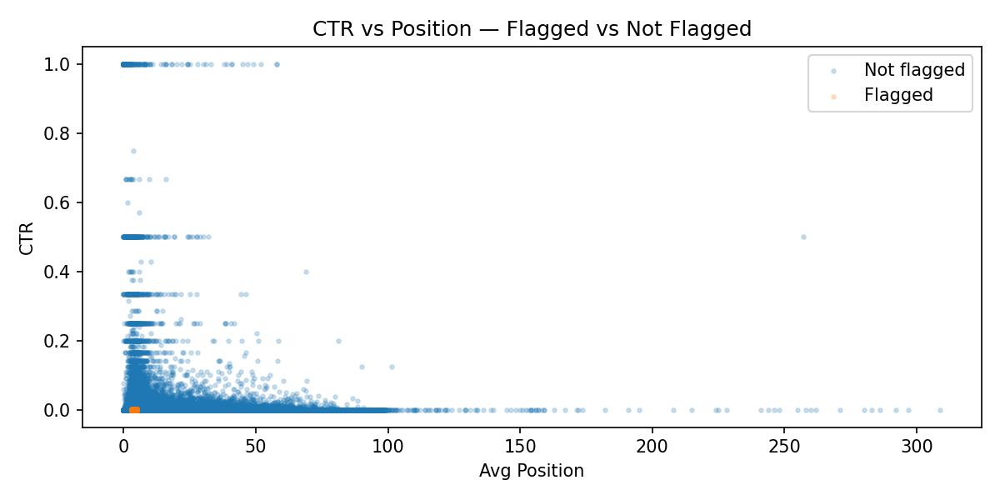

Content teams managing large websites face a prioritisation problem: hundreds of pages compete for limited editorial hours each week. Without a systematic scoring method, teams rely on gut feel or simple rules — "flag anything not updated in 90 days" — that ignore the interaction between content age, visibility, and click-through performance relative to search position.
This paper builds a repeatable scoring model that ranks pages by observed underperformance signals, producing a weekly priority queue a content strategist can act on directly. The output is decision-support, not automation — a human reviewer checks every high-priority candidate before any editorial action is taken.
Source: FlyRank ML Internship Warehouse —
gated Hugging Face release, anonymized production search data.
Tables used:
fact_content_daily_performance (daily GSC impressions,
clicks, position per page) and dim_content (content
metadata: type, word count, created/updated dates).
Date window: month = 2026-03 (mid-panel month).
Rows after filtering: 176,738 page records.
Unique pages: aggregated at page-month grain —
one row = one content page.
gsc_data_available = FALSE — no reliable
signal to train on
No ground-truth refresh outcome exists in the data — there is no column
confirming whether a refresh improved performance. A proxy label is
constructed: a page is flagged as a priority candidate
(is_declining_label = 1) when it has
above-median impressions AND
below-median CTR for its position tier.
This identifies pages Google is still showing to users but that are
underperforming on clicks relative to similar-ranked pages.
| Feature | Knowable at decision time? |
|---|---|
impressions_90d | ✅ 90-day lookback |
clicks_90d | ✅ 90-day lookback |
avg_position | ✅ historical average |
ctr | ✅ derived from clicks/impressions |
days_since_last_update | ✅ past date difference |
content_age_days | ✅ past date difference |
word_count | ✅ static content attribute |
Hand rule — flag pages that are stale (≥90 days since update), visible (above-median impressions), and underperforming CTR at their position tier. Ranked by impressions to break ties.
Random Forest classifier: 100 trees, max_depth=5, class_weight=balanced. Starting with a Decision Tree (max_depth=3) as a readable stepping stone. Both compared against the hand rule on the same split and same metric.
Stratified 80/20 train/test split (random_state=42). Grouped split by client was attempted but failed — positive labels too sparse (1.9% positive rate) to survive client-level partitioning. Stratified split used as honest alternative, guaranteeing both classes appear in train and test.
All features confirmed knowable at decision time. Label column excluded from feature set. No future-window columns used. No product flags or client-derived labels introduced.
| Method | Precision@20 | Precision@50 |
|---|---|---|
| Hand rule (baseline) | 1.000 | 0.640 |
| Decision Tree (depth=3) | 0.500 | 0.640 |
| Random Forest (100 trees) | 1.000 | 1.000 |

Figure 1 — Random Forest outperforms the hand rule at Precision@50, correctly ranking all top-50 priority candidates on the held-out split.

Figure 2 — Priority score distribution across the three action tiers. REVIEW_NOW pages cluster at higher scores; HOLD pages cluster near zero.

Figure 3 — Flagged pages (orange) show below-median CTR relative to their position tier. The separation is clearest in positions 1–10.
Every page receives a priority score and is assigned to one of three action tiers. A human reviewer checks every REVIEW_NOW page before acting — the score surfaces candidates, not decisions.
| Tier | Reason code | Recommended action | Human check required |
|---|---|---|---|
| REVIEW_NOW | high_impressions_low_ctr_for_position |
Prioritise for title, meta, or content review this week | Is topic still relevant? Is position realistic? |
| MONITOR | moderate_signal_watch_next_month |
Flag for review next cycle if signal persists | Check again after next data refresh |
| HOLD | no_action_needed |
No editorial action needed now | None required |
All notebooks are committed to the public repo and can be rerun top-to-bottom. Data access requires a free Hugging Face account and a READ token for the gated FlyRank internship warehouse.
Built on the FlyRank ML Internship dataset — real anonymized production search data released for internship research purposes. Data accessed via Hugging Face gated release. No client names, URLs, or private queries appear anywhere in this paper or the associated repository.
MSc Advanced Computer Science · University of Liverpool · 2026.